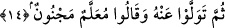
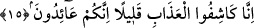

olmuşlardır. Kendilerine âdetâ dağları yerinden oynatacak kàhir mûcize ve açık
âyetlerle onlara hak yollarını beyân eden şânı yüce bir elçi gelmiştir. Onların başlarına
gelen belâdan kurtarılmaları husûsu, bu elçinin hak yolunu beyân etmesini kabûl
etmelerinden daha büyük bir iş değildir.
14. Ondan yüz çevirdiler: ”Bu, öğretilmiştir, cinlenmiştir” dediler.
Burada “sümme” kelimesi yine bir şeyin vukuunu uzak görmek içindir. O elçiyi kabûl
edip yönelmelerini gerektiren nice büyük mûcizeler müşâhede etmişken “Ondan yüz
çevirdiler” bununla da kalmayıp o elçi hakkında “Bu, öğretilmiştir, cinlenmiştir”
dediler.” Yani bazen Sakîf kabîlesine mensûb adı Addâs yahut Ebû Fekhe yahut Cebr
yahut Yesâr olup Arap olmayan biri buna öğretiyor, bazen de mecnûn ya da deli dediler.
Yahut bazıları bu birileri tarafından öğretiliyor derken, bir başka gürûh da mecnun
olduğunu söylediler. Böyle bir sıfatı olan bir topluluğun bu elçinin tesîriyle düşünüp
öğüt almaları beklenebilir mi? Bunlar acıkınca kuyruk sallayıp sızlanan, karnı doyunca
da azan köpeğe benzerler.
15. Biz sizden azâbı birazcık kaldırırız, ama siz yine (inkârınıza) dönersiniz.
Bu ifâde onların “Rabbimiz, bizden azâbı kaldır” demelerine mukabil Allah
tarafından kendilerine verilen cevaptır. Biz, Hz. Peygamber’in (s.a.) duâsıyla sizden bu
mâlûm belâyı kaldırır, yağmur yağdırırız. “birazcık kaldırırız” ifâdesi onların sîret ve
fıtratlarının habîs ve pis olduğunun delilidir. Çünkü onlar belânın biraz kaldırılmasıyla
dahi küfür isyân ve azgınlıklarına döneceklerse belâ tamamen kaldırıldığında muhakkak
küfre döneceklerdir. Yahut belâyı az bir zaman kaldırdığımızda demektir ki, bu da
onların kalan ömürleridir.
“Ama siz yine (inkârınıza) dönersiniz” Siz bunun ardından yine azgınlık ve küfürdeki
ısrârınıza döner ve bu durumu unutursunuz. Burada her iki fiilde de fâil kalıbının
kullanılması, yani kâşif ve âid şeklinde getirilmesi bunların muhakkak böyle olacağına
delâlet içindir. Gerçekten her iki durum da gerçekleşmiştir. Zîrâ Allah Teâlâ
peygamberin duâsı bereketiyle onlardan belâyı kaldırmış, ardından onlar da hemen eski
azgınlık ve inatlarına dönmüşlerdir. Çünkü bunların bozuk tıynetleri ve çarpık
tabîatlarının gerektirdiği vaziyet, hemen sözlerinden dönüp ahdi bozmaları ve engel
kalkınca derhal şirke dönmeleridir. Allah Teâlâ bu durumu Kur’ân-ı Kerîm’de muhtelif
yerlerde gemi yolcuları hakkında beyan etmektedir. (Yûnus, 10/23, Lokman, 31/32) yani